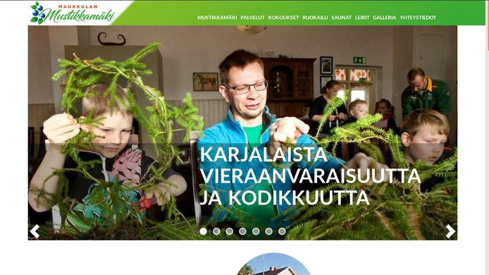
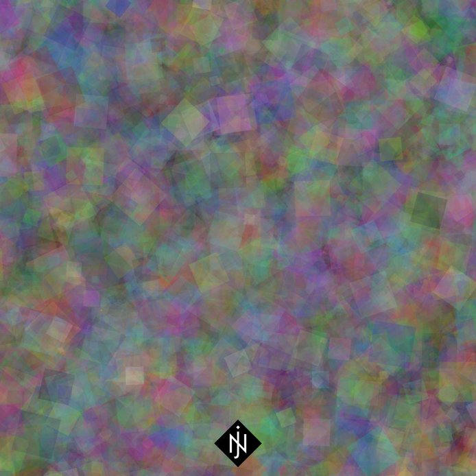
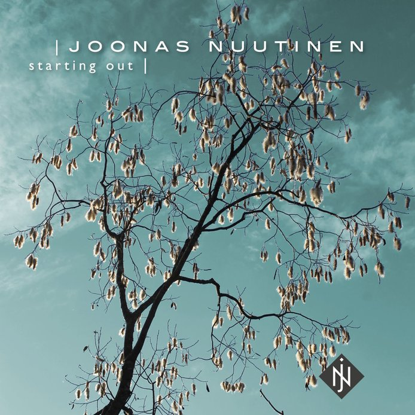
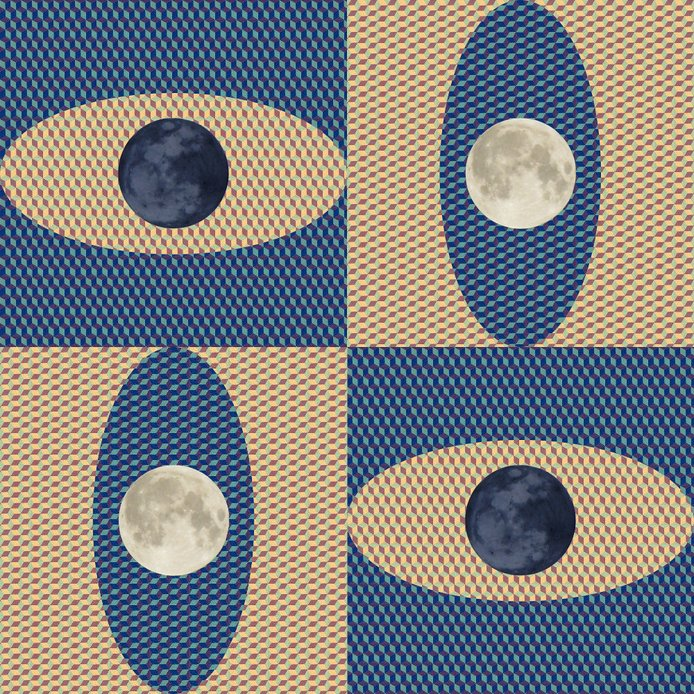

Portfolio
Introduction
Hi, I'm Joonas. I make websites and music. This is my portfolio.
Web
In this section, you'll find web projects I've done.
Teatterivaraus
Published: March 21, 2018
Project type: Personal / SaaS
Link: www.teatterivaraus.fi
Teatterivaraus is a service that helps theaters manage their reservations. It uses Node.js and MongoDB on the back-end and jQuery on the front-end.
Ilomantsin palvelukartta
Updated: March 12, 2018
Published: February 13, 2017
Project type: Client
Graphic design: Jouni Luostarinen / JL-artworks
Link: ilomantsi.yrityskartat.fi
The project is a static HTML page with JavaScript (jQuery). It uses the OpenLayers (OpenStreetMap) API for the map.
Maukkulan Mustikkamäki

Published: January 2018
Project type: Client
Graphic design: Jouni Luostarinen / JL-artworks
Link: www.maukkulanmustikkamaki.fi
The site runs on WordPress and Bootstrap, and I've added some custom functionality using PHP and JavaScript (jQuery).
Megrin Matkailu

Updated: January 2018
Published: October 2017
Project type: Client
Graphic design: Jouni Luostarinen / JL-artworks
Link: www.megri.fi
The site runs on WordPress and Bootstrap, and I've added some custom functionality using PHP and JavaScript (jQuery).
Teatteri Möhkö
Updated: January 2018
Published: February 2014
Project type: Client
Graphic design: Jouni Luostarinen / JL-artworks
Link: teatterimohko.fi
I've taken care of the technical side of Teatteri Möhkö's website since 2014. We've updated it every year to match the theater's changing repertoire. The site runs on WordPress, and I've added some custom functionality using PHP and JavaScript (jQuery).
Ilomantsin Kalevalaiset Naiset
Published: April 2016
Project type: Client
Link: www.ilakat.fi
The site runs on WordPress.
JL-artworks
Published: March 2015
Project type: Client
Graphic design: Jouni Luostarinen / JL-artworks
Link: www.jl-artworks.fi
The site runs on WordPress with some custom JavaScript functionality.
Music
In this section, you'll find music projects I've done.
Yötaivaan tähti
Premiere: TBA
Project type: Client
Role: Composer
Lyrics: Vesa Sorola
Choir arrangement: Ilkka Vesala
Yötaivaan tähti is a 17-minute composition. It consists of six parts that describe the life of an archetypal Finnish man.
Vesa Sorola wrote the lyrics, I composed the music and Ilkka Vesala arranged the piece for a male choir. Ilomantsin mieslaulajat will premiere the piece later in 2018.
Improvisations 3

Released: January 22, 2018
Project type: Personal
Link: Improvisations 3
Improvisations 3 is the final part of my Improvisations trilogy. It has six tracks totaling 40 minutes.
Improvisations 2

Released: December 4, 2017
Project type: Personal
Link: Improvisations 2
Improvisations 2 is the second part of my Improvisations trilogy. It has six tracks totaling 39 minutes.
Improvisations 1
Released: October 16, 2017
Project type: Personal
Link: Improvisations 1
Improvisations 1 is the first part of my Improvisations trilogy. It has seven tracks totaling 42 minutes.
Syrjän voima
Premiere: July 7, 2017
Project type: Client
Role: Composer, arranger
Lyrics: Lauri Jänis
Syrjän voima is a play premiered by Teatteri Möhkö in 2017.
I composed and arranged a total of 36 minutes of music for the play. Among those are five songs that feature lyrics by the playwright Lauri Jänis.
Millenniumin toivot
Premiere: January 20, 2017
Project type: Client
Role: Composer
Lyrics: Lauri Jänis
Band arrangement: Sinikka Taalikainen
Link: Millenniumin toivot
Millenniumin toivot is a musical premiered by Ilomantsin lukio, Ilomantsin kansalaisopisto, the Student Board of Ilomantsin kansalaisopisto and Pielisen Karjalan musiikkiopisto in 2017.
I composed the musical's 15 songs. Their total length is 38 minutes. The lyrics were written by the playwright Lauri Jänis.
Rajalla kulkijat
Premiere: July 6, 2016
Project type: Client
Role: Composer, arranger
Lyrics: Lauri Jänis
Rajalla kulkijat is a play premiered by Teatteri Möhkö in 2016.
I composed and arranged a total of 46 minutes of music for the play. Among those are six songs that feature lyrics by the playwright Lauri Jänis.
12 kosketusta
Premiere: April 23, 2016
Project type: Client
Role: Composer, arranger
Lyrics: Jarmo Jokinen
Link: 12 kosketusta
12 kosketusta is a musical premiered by Veräjä in 2016.
I composed and arranged 10 songs for the musical. Their total length is 35 minutes. The lyrics were written by Jarmo Jokinen.
Starting Out

Released: February 16, 2015
Project type: Personal
Album photo: Viljami Ovaskainen
Graphic design (CD): Jouni Luostarinen / JL-artworks
Link: Starting Out
Starting Out is my debut album. It has seven tracks totaling 40 minutes.
Kuutamo

Premiere: October 10, 2014
Project type: Client
Role: Composer, arranger
Link: Listen on YouTube
Kuutamo is a three-part composition totaling 15 minutes. It was premiered in Ilomantsi in 2014.
Mottimestari
Premiere: July 4, 2014
Project type: Client
Role: Composer, arranger
Link: Listen on YouTube
Mottimestari is a play premiered by Teatteri Möhkö in 2014. I composed and arranged a total of 20 minutes of music for the play.
Hire me
I'm available for hire. If you need a website, a web app or music for your project, please contact me at joonas@joonasnuutinen.com.